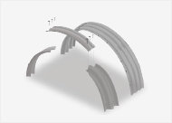
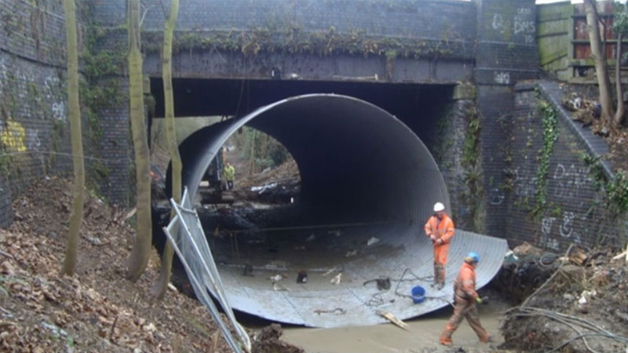
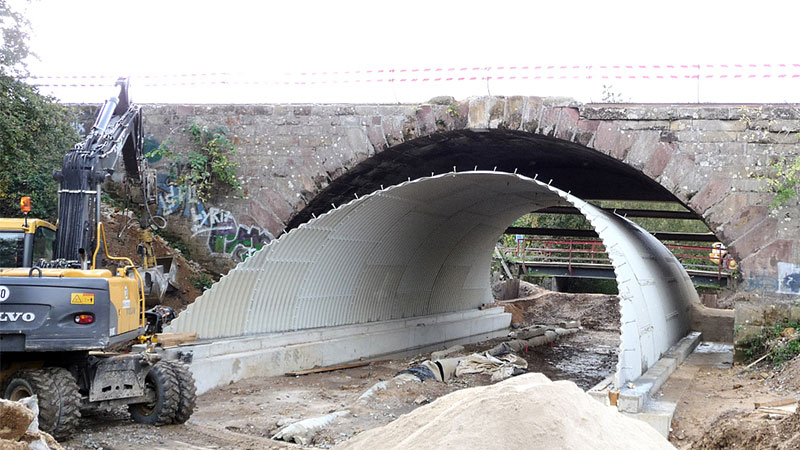
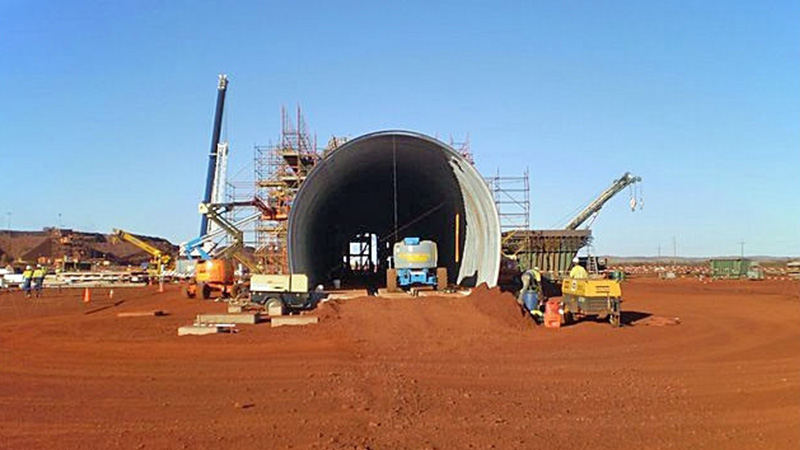
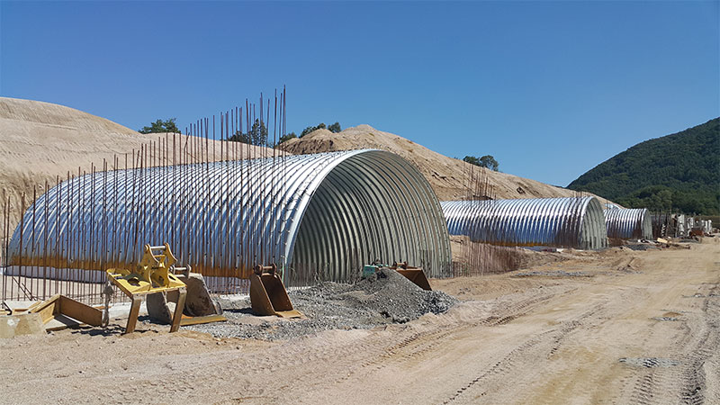
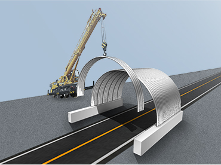

01 / STRUCTURE
Zeminle birlikte yük taşıma
Çelik ile çevresindeki zeminin etkileşiminden yararlanır.

Menfezler, ekolojik geçişler, köprüler ve madencilik uygulamaları için koruge çelik yapılar.
Koruge çelik plaka, çelik levhaya dalgalı profil verilerek üretilen yapısal malzemedir. Çevresindeki zeminle etkileşerek gömülü yapının yüklerini taşır.
Çelik ile çevresindeki zeminin etkileşiminden yararlanır.

Saha geometrisine ve kullanım amacına uygun kemer, dairesel ve diğer kesitler.

Menfezler, ekolojik geçişler, köprüler, madencilik ve koruyucu yapılarda kullanılır.
Rehabilitasyon, drenaj menfezleri, madencilik, mühimmat depoları, ekolojik geçişler ve köprüler. Fotoğrafları tek sayfada uygulamaya göre inceleyin.
Eski geçit, menfez ve küçük köprüler içten koruge çelik astarla güçlendirilir. Mevcut durum, kalan hidrolik açıklık, dolgu, enjeksiyon ve yapım sırası birlikte incelenir.






Karayolu drenaj geçişleri ve su yolu bağlantıları; kemer, temel, giriş-çıkış ve geri dolgu uygulamaları.


Maden yapılarının genel görünümünden kemer kaldırma, saha montajı ve geri dolguya.
GS talebi · Newman, Batı Avustralya




Kemer montajı, toprak örtülü dış görünüm ve iç hacimle mühimmat deposu uygulamaları. Tesis kimlikleri paylaşılmaz; uygulama tesis tasarım ve şartnamesine tabidir.



Arazi, yol ve geçit bağlantılarını gösteren gerçek ekolojik geçiş uygulamaları.


Sahaya uygun geometri ve montajı gösteren küçük köprü ve yol altgeçidi uygulamaları.


Geometri ve tasarım koşullarını doğrulayıp yapısal kontroller, çizimler ve saha desteğiyle devam edin.
Mevcut REXSTEEL ürün tanıtımındaki temel ölçülerdir. Uygulanacak teknik şartları ve tedarik kapsamını her proje için doğrulayın.
| Kalınlık (t) | Koruge hatvesi (p) | Koruge derinliği (d) |
|---|---|---|
| 3.4~9.0mm | 381mm | 140mm |
Zemin, yük, drenaj koşulları ve yapım sırası birlikte değerlendirilir.

Kullanım amacı, açıklık ve yükseklik, örtü, yükler ve zemin koşulları doğrulanır.

Plakalar tasarıma uygun üretilir; saha montajı ve bağlantılar kontrol edilir.

Yapım planına göre geri dolgu, sıkıştırma ve deformasyon kontrolü değerlendirilir.
Ürün, tasarım ve saha desteği için bize ulaşın.